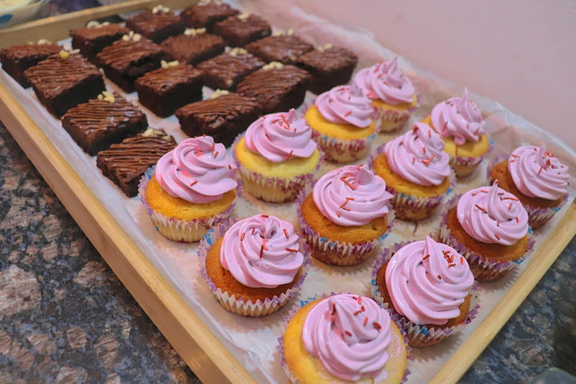
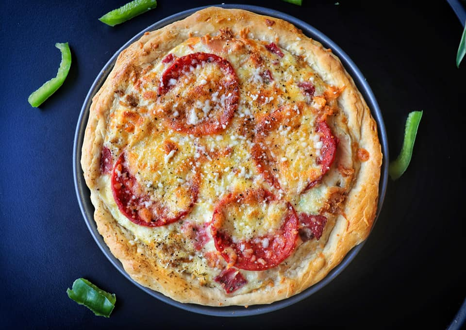
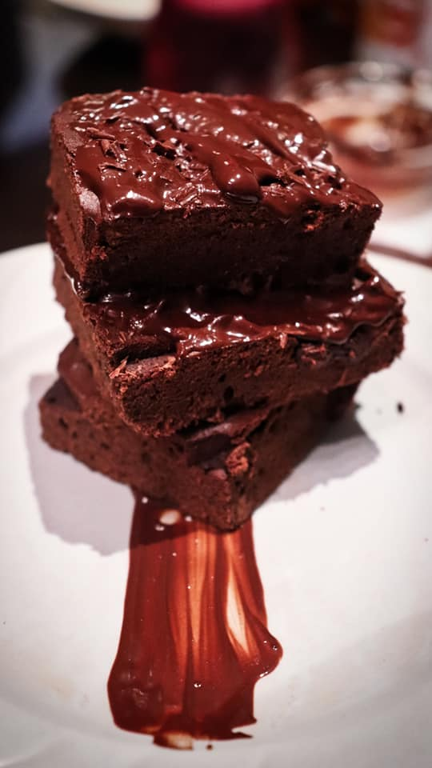
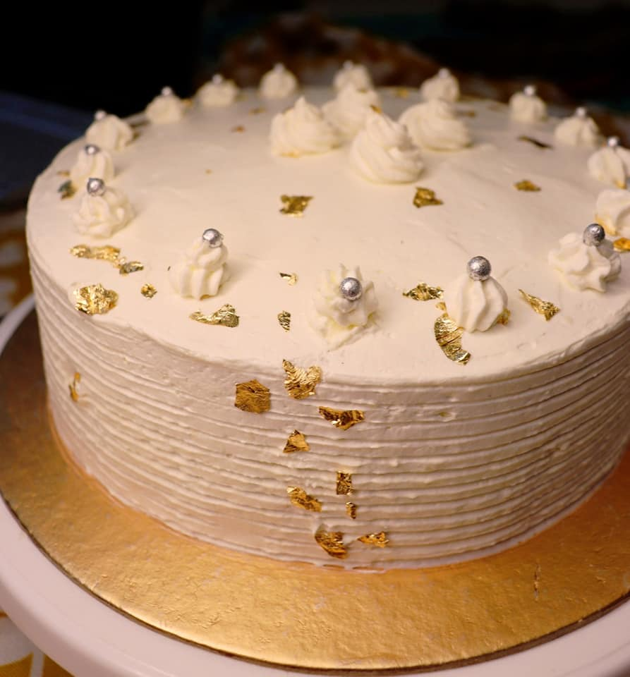
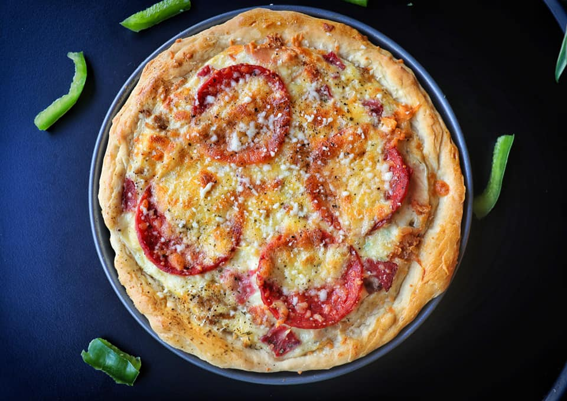
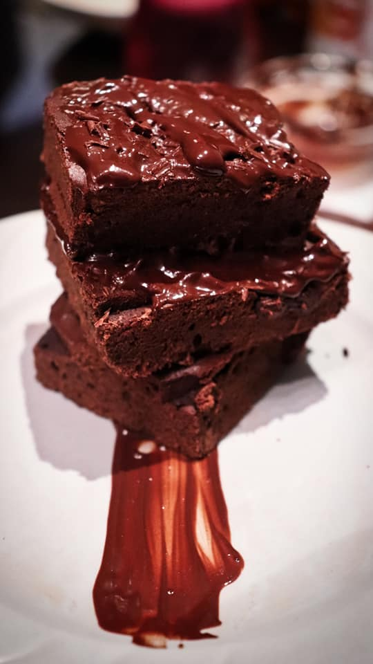
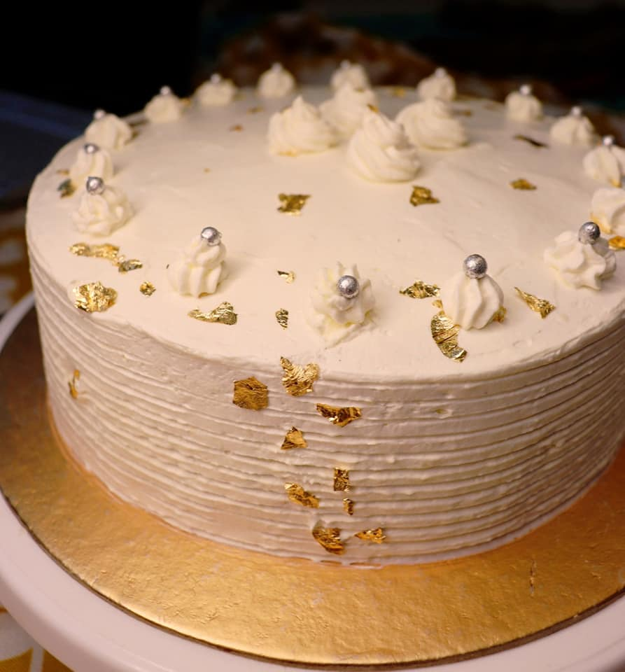
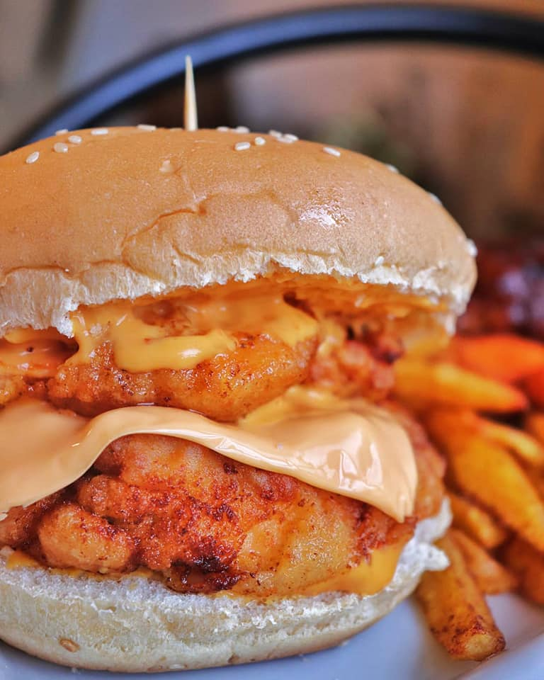
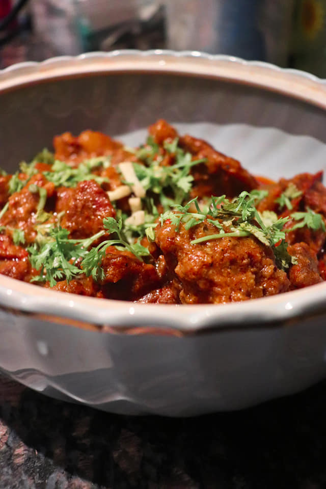
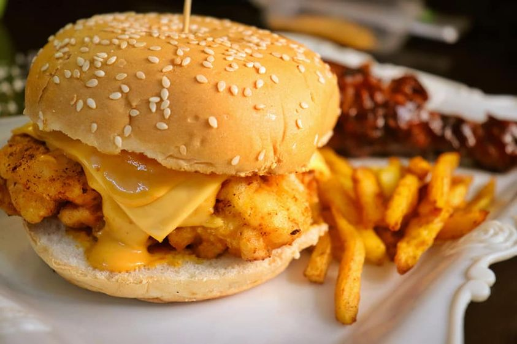

Just an engineering student with a passion for cooking.Make gifts meaningful by putting the time in creating them, whether baking and cooking, or in making arts and craft. It will all have more meaning for the giver and receiver.
Baking makes me focus. On weighing the sugar. On sieving the flour. I find it calming and rewarding because, in fairness, it is sort of magic - you start off with all this disparate stuff, such as butter and eggs, and what you end up with is so totally different. And also delicious.Here is a glimps of my experiments.
 





Cooking is all about people. Food is maybe the only universal thing that really has the power to bring everyone together. No matter what culture, everywhere around the world, people get together to eat.
  